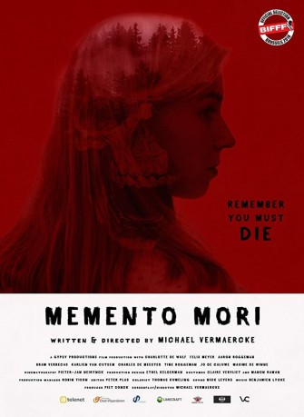

#10992 Memento Mori
 
 IMDB-Wertung: 6.4 / 10
IMDB-Wertung: 6.4 / 10  Metascore: 0
Metascore: 0 
Fleur (Charlotte De Wulf) besucht eine Party. Sie hat sich auf einen harmlosen, spaßigen Abend eingestellt und genau so beginnt er auch – aber dann wird er grauenvoll. Fleur fällt ins Koma. Während ihr Körper ruht, kehrt sie in Gedanken zurück zu den grausamen Ereignissen, wegen denen sie im Krankenhaus landete. Die junge Frau muss alles noch mal neu durchmachen. Sie ist gefangen im Alptraum und es steht nicht fest, dass sie jemals wieder aufwachen wird…
Jahr: 2018
Dauer: 71 Minuten
FSK: 18
Land: Belgien Studio: I-On New MediaTonspuren:
Untertitel:
Auflösung: 1080p (1920x808) Größe: 2744 MB
Genre: Horror
Regisseur: Michaël Vermaercke
Drehbuch: Michaël Vermaercke
Soundtrack: Benjamien Lycke
Darsteller:
- Charlotte De Wulf als Fleur
- Felix Meyer als Jules
- Bram Verrecas als DJ Wouter
- Tine Roggeman als Vamp
- Aaron Roggeman als Alex
- Karlien Van Cutsem als Valerie
- Charles De Meester als Andy
- Jorrik Severins als Karel
- Celine Van De Voorde als Party nurse 01
- Emma Reynaert als Party nurse 02
- Jo De Caluwé als Teacher
- Maxime De Winne als Playground supervisor
Datei: X:\FSK18-2018\Memento Mori (2018, FSK18, 1920x808).mkv seit 16.04.2019
Festplatte: FSK18
 Es gibt insgesamt 23 Filme in der Gruppe 'FSK18-2018'
Es gibt insgesamt 23 Filme in der Gruppe 'FSK18-2018'